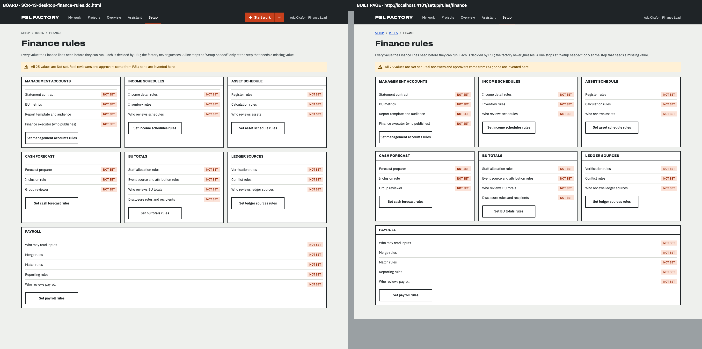
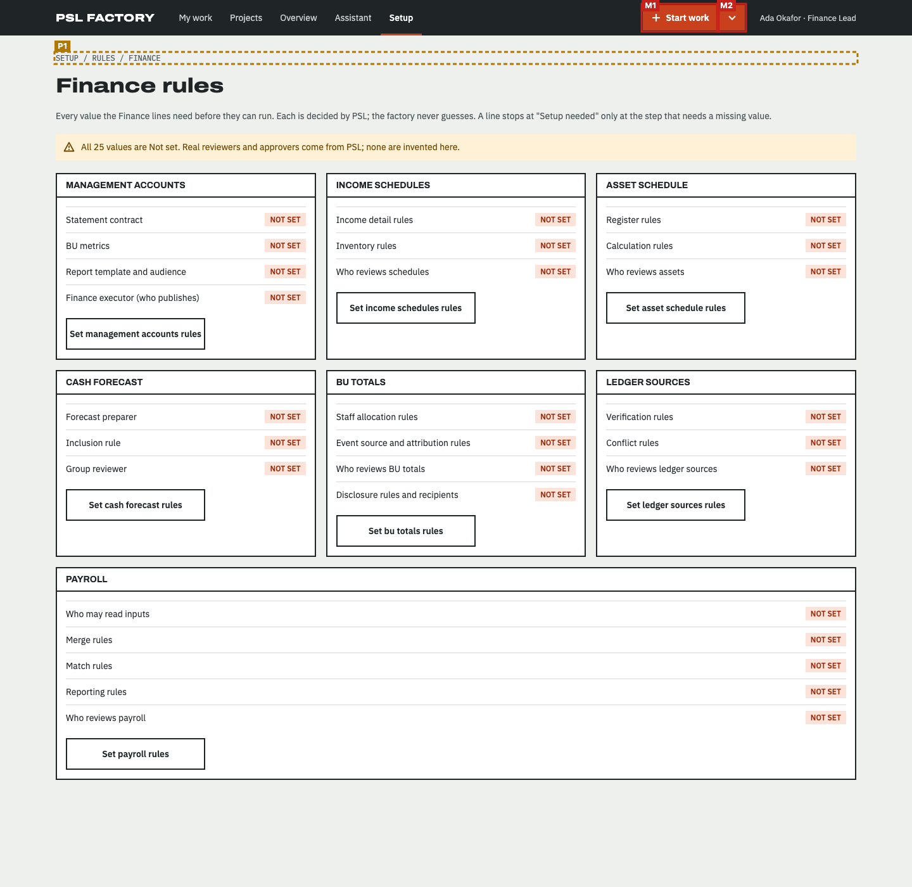
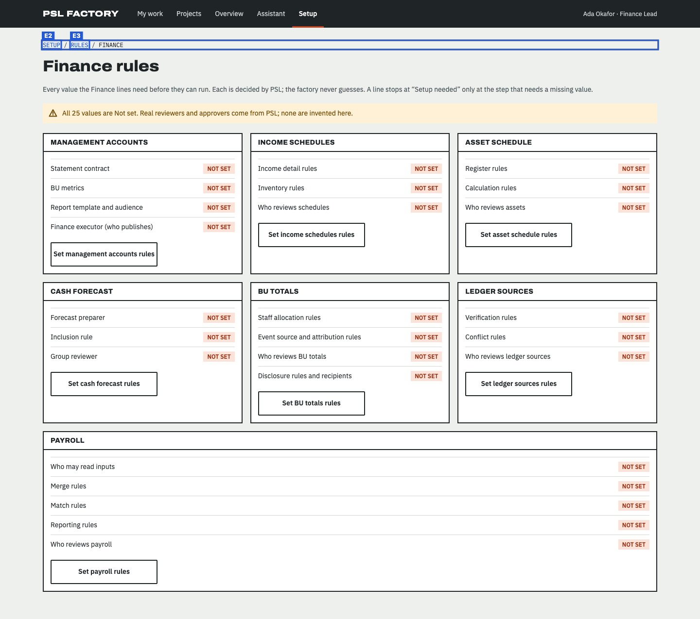
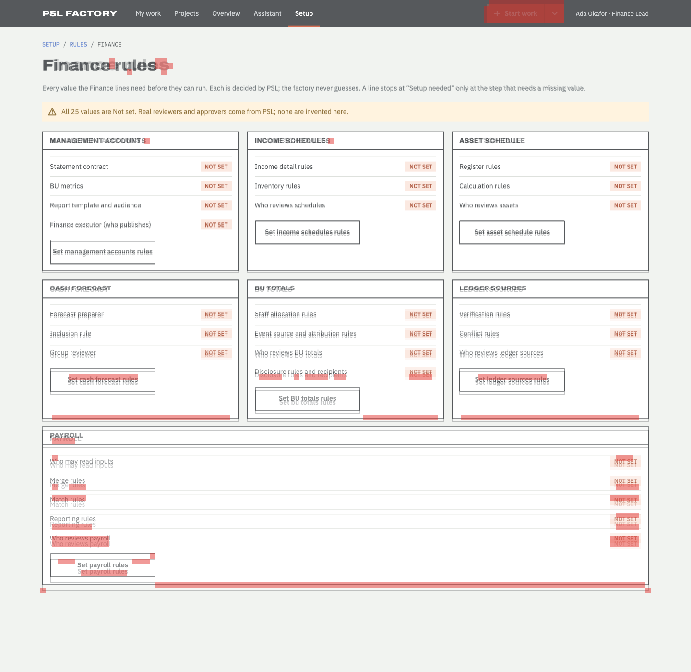

Does the built page follow the design?
Board SCR-13-desktop-finance-rules.dc.html compared with http://localhost:4101/setup/rules/finance at 1440px wide · 2026-11-14T07:38:11.613Z
- Every board item is on the page or approved as an exception (100%).
- Visual match 96.2 meets 90.
- 1 item(s) are in a different place; review them (not part of the pass rule unless --strict-position).
27 of 29 things drawn on the board were found on the page: headings, buttons, links, search and filter controls, table columns, labels and the repeated rows (counted once, not per row).
How closely the shapes line up: blocks, bars, tables and text areas, compared in 12px squares over the top 1400px. Different words in the same place still count as a match, so sample data does not lower the score.
Missing from the built page 2
Drawn on the board but not found on the page. Each one must be built, or approved as an exception.
| # | What | Text on the board | Where on the board | Exception |
|---|---|---|---|---|
| M1 | Link | Start work | right, 8px down | approved Start work and More ways to start belong to F-05 (D-04), which has not merged at this base; the top bar is the shell's (src/shell, not touched). · coordinator (overnight, provisional — see delivery/OVERNIGHT-DECISIONS.md D-22) |
| M2 | Link | More ways to start | right, 8px down | approved As Start work (F-05, D-04). · coordinator (overnight, provisional — see delivery/OVERNIGHT-DECISIONS.md D-22) |
In a different place 1
Found on both, but in a different order, side of the page, or area (for example inside the table frame instead of above it).
| # | What | How it moved |
|---|---|---|
| P1 | Text SETUP / RULES / FINANCE |
|
Looks different 14
Found on both, but styled differently: table rows and cells, fonts, colours, underlines, outlines, corners. Not part of the score; check each one against the board.
| What | Difference |
|---|---|
| Text "MANAGEMENT ACCOUNTS" |
|
| Link "Set management accounts rules" |
|
| Text "INCOME SCHEDULES" |
|
| Link "Set income schedules rules" |
|
| Text "ASSET SCHEDULE" |
|
| Link "Set asset schedule rules" |
|
| Text "CASH FORECAST" |
|
| Link "Set cash forecast rules" |
|
| Text "BU TOTALS" |
|
| Link "Set bu totals rules" |
|
| Text "LEDGER SOURCES" |
|
| Link "Set ledger sources rules" |
|
| Text "PAYROLL" |
|
| Link "Set payroll rules" |
|
On the page but not on the board 3
Built but not drawn. Some are expected (data, status lines); the rest need the design engineer to approve or remove them.
| # | What | Text on the page | Where on the page |
|---|---|---|---|
| E1 | Navigation area | Breadcrumb | middle, 85px down |
| E2 | Link | SETUP | left, 85px down |
| E3 | Link | RULES | left, 85px down |
Pictures
The red dashed line on the side-by-side marks how far down the visual score looks. On the marked board, red boxes are missing items (M). On the marked page, amber boxes moved (P) and blue boxes are extra (E). In the difference picture both screens are laid over each other and red squares are where the shapes do not line up.






Notes about this run
- Images: /_blob/ images are served from /Users/Hunchoo/psl-factory-worktrees/f-11/design/mascots/canvas-assets.json (19 mapped).
Found on both (27)
| Navigation area | Main | |
| Text | PSL FACTORY | |
| Link | My work | |
| Link | Projects | |
| Link | Overview | |
| Link | Assistant | |
| Link | Setup | |
| Text | Ada Okafor · Finance Lead | |
| Main area | ||
| Text | SETUP / RULES / FINANCE | |
| Heading | Finance rules | |
| Text | Every value the Finance lines need before they can run. Each is decided by PSL; the factory never guesses. A line stops at "Setup needed" only at the step that needs a missing value. | page: Every value the Finance lines need before they can run. Each is decided by PSL; the factory never guesses. A line stops at “Setup needed” only at the step that needs a missing value. |
| Text | All 25 values are Not set. Real reviewers and approvers come from PSL; none are invented here. | |
| Text | MANAGEMENT ACCOUNTS | |
| Link | Set management accounts rules | |
| Text | INCOME SCHEDULES | |
| Link | Set income schedules rules | |
| Text | ASSET SCHEDULE | |
| Link | Set asset schedule rules | |
| Text | CASH FORECAST | |
| Link | Set cash forecast rules | |
| Text | BU TOTALS | |
| Link | Set bu totals rules | page: Set BU totals rules |
| Text | LEDGER SOURCES | |
| Link | Set ledger sources rules | |
| Text | PAYROLL | |
| Link | Set payroll rules |
How the scores are worked out
Element coverage. The board is drawn locally from its own template and sample data. From the drawn board the check lists everything a person sees or uses: page areas (navigation, main, search), headings, links, buttons, form fields with their labels, table column headers, filter, search and pagination controls and fixed labels. Rows drawn from sample data count once, as a pattern ("table rows with these columns"). Each item is looked for on the page by its kind and its words (ignoring capitals, curly quotes and small wording differences, at least 80% similar). Coverage is found ÷ drawn. Order is compared in reading order (top to bottom, left to right); an item is "moved" when it breaks the order, sits on the other side of the page, or sits inside a different area.
Visual match. Both full-page screenshots are compared in 12px squares after a light blur, over the board's height (1400px; the page is 1275px). Only squares with something in them count. A square matches when its colours line up, or when both have text or lines there. Score = matching ÷ counted squares (8981 of 9335). Over every square including empty background it would be 97.5.
Technical details
Board file: /Users/Hunchoo/psl-factory-worktrees/f-11/design/canvas/project/SCR-13-desktop-finance-rules.dc.html
Viewport: 1440×900
Report data: report.json
Exceptions file: /Users/Hunchoo/psl-factory/delivery/features/F-11/fidelity-exceptions.json